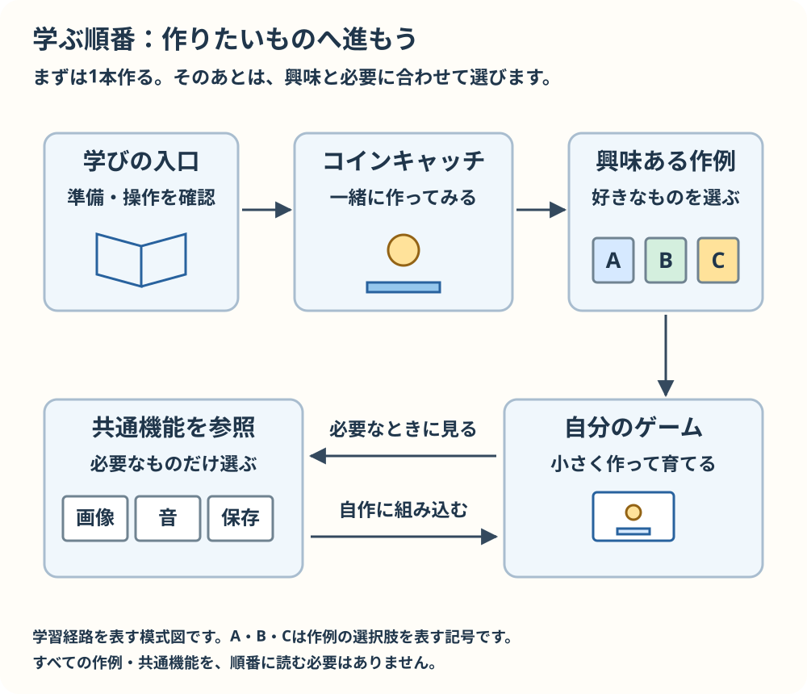

始める前に
文法を学ぶ
ZIPを展開して、できたフォルダー（通常はmy-game）のindex.htmlを開きます。WindowsではZIPを右クリックして「すべて展開」を選びます。
文字を入力できれば始められます。プログラミングの経験は必要ありません。ファイルやフォルダーの操作に迷ったら準備と操作を見ながら進めましょう。
ここを終えると、3ファイルをコピーして編集し、保存と再読み込みで結果を確認できます。コインキャッチでは描画、動き、入力、当たり判定、勝敗を少しずつ作ります。
おすすめの道順

最初にコインキャッチを1本作り、そのあとは好きな作例を選びましょう。自分のゲームで必要になった機能だけ、共通機能のページで調べて組み込めます。
今の自分に合う道を選ぶ
初めて1本作る
先に分かっているとよいこと：文字入力と保存・再読み込み。コインキャッチを進めると、描画、移動、接触、勝敗を使うゲームを作れます。次は的当てを試しましょう。
好きな作例を改造する
先に分かっているとよいこと：3ファイルのコピーと、値を変えて結果を確認する方法。好きな作例を一つ選び、目標や速さを変えると、既存のゲームを自分の作品に合わせられます。次は自分で考える課題に挑戦しましょう。
共通機能を組み込む
先に分かっているとよいこと：関数と状態、start・update・drawの役割。通し教材を終えると、メニュー、結果、保存、画像を一つのゲームに組み込めます。次は必要なものを共通機能一覧から選びましょう。
クラスを使う上級へ進む
先に分かっているとよいこと：配列・オブジェクト・関数。基礎ページのクラス例とカードバトルに進むと、似たデータや処理をまとめる書き方を試せます。次は爆弾迷路のコードも比べてみましょう。
途中で使えるページ
- 基礎確認：座標、変数、条件などを短い例で確認します。
- エラーを直す練習：こわれた見本の原因を探します。
- 通し教材：コインキャッチにメニュー、結果、保存、画像を組み合わせます。
- 自分で考える課題：予想、穴埋め、改造から自由制作へ進みます。
次は好きな作例の完成版を遊び、作ってみたい仕組みを一つ選びましょう。